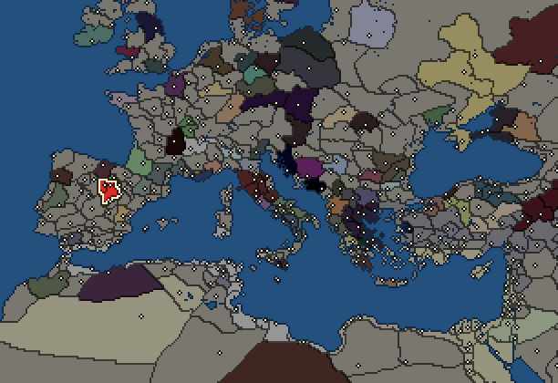
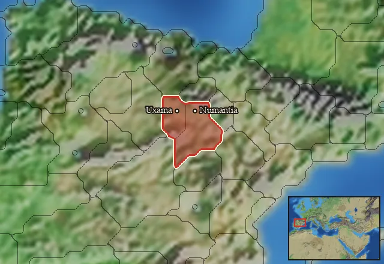

RTR: Imperium Surrectum
RTR: Imperium SurrectumArevaci


- difficulty Difficult
- Celtiberian culture
- believes
 Celtic
Celtic - 2 settlements
- capital Numantia
- 7,400 manpower
- 3 characters
- 15 faction units
- 433 regional units
The campaign brief
"The sword of the Celtiberians cuts through anything which gets in its way, for no shield or helmet or bone can withstand a blow from it, because of the exceptional quality of the iron." – Poseidonios of Apameia
We are the Arevaci. We are a tribe that dwells between the Iberian peoples along the coast and the Celtic tribes in Gaul. Many generations ago, our ancestors migrated from the fertile plains of Gaul across the mountain chain to the lands of Hispania, where they established a multi-faceted culture with Iberian and Celtic elements. They mixed with the local population and began to live from farming, livestock and metal mining. The trade in silver has long been an important source of the wealth of our tribes. The Phoenicians and Greeks have been coveting this valuable product for a long time, and they have several trading outposts along the coast. For a long time, this trade was peaceful, and each side acquired wealth and opportunity from this business. The Phoenician army commanders have always been happy to recruit men from our tribes as fighters, as they depend on tough and powerful mercenaries for their wars.
In the last few decades, however, the Phoenicians of Carthage in particular represent a great danger to trade and the freedom of our tribes. The settlers from the largest of all the Phoenician settlements in the West not only built strong fortified cities and large ports for their many ships, but increasingly move inland to gain further influence and power there. The weakest tribes have already been subjugated by them, seeing their men distributed in the Carthaginian armies and their women and children being enslaved, while their land was occupied.
But there is resistance from our elders. They do not want to accept these attacks idly and call on us to unite the tribes under a common leader so we can defend ourselves. Our strength lies in the knowledge of the landscape, the use of the terrain for our raids on the ponderous armies of the Carthaginians, and the struggle in loose formations, which let us use the mountainous landscape to our advantage. Another strength lies in making good swords of the best iron and in the strength of our warriors, who are ready to fight to the utmost for their country and their families. And once the Carthaginian advance has been averted, we will attack their cities, break down their walls, destroy their ports, and banish the Phoenicians from Hispania once and for all. May the mighty Neto give us victory!
Starting settlements
Arevaci begins with 2 settlements and 7,400 manpower.
| Settlement | Region | Size | Manpower | Already built | Settlement | Region | Size | Manpower | Already built |
|---|---|---|---|---|---|---|---|---|---|
| Numantia (capital) | Arevacia | large town | 5,500 | 10 buildings | Uxama | Arevacia Septentrionalis | town | 1,900 | 4 buildings |
What is already built in each settlement
Numantia, in Arevacia: Governor's Villa, Wooden Palisade, Homeland, Region Information Scroll, Roads, Horse Trainer (Rural), Local Barter, Highland Pasturing (Husbandry), Basic Armoury, Cisterns (Sanitation)
Uxama, in Arevacia Septentrionalis: Governor's House, Homeland, Region Information Scroll, Horse Trainer (Rural)
Starting diplomacy
Arevaci begins the campaign with no allies, no trade agreements and no wars.
Like every faction, it is also at war with the  Free Peoples, who hold every settlement no faction does.
Free Peoples, who hold every settlement no faction does.
Reforms
Open to every faction: Military innovations have arrived!, Second wave of military innovations have arrived!.
Units you can recruit
The same as in the main campaign.
Homeland
Arevaci's homeland is 2 regions. Only there can it install the Homeland government (more on homelands).

Starting characters
| Name | Role | Age | Name | Role | Age | Name | Role | Age | |||
|---|---|---|---|---|---|---|---|---|---|---|---|
| Carus | General | 35 | Indortes | General | 25 | Ambon | General | 32 |